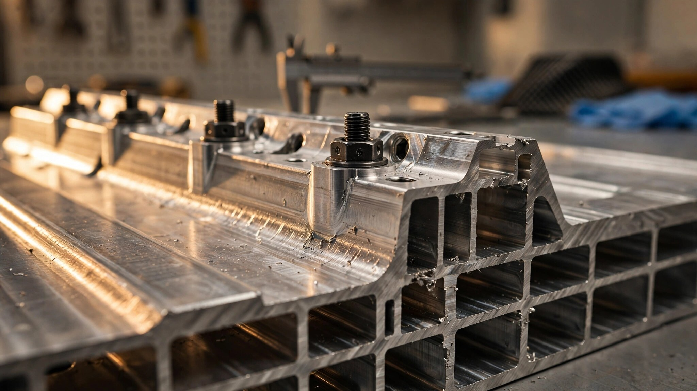

When the Battery Is the Floor: How Porsche Re-Engineers the 718's Structure for a Flat-Six
Porsche designed the PPE Sport platform so the battery pack carries structural loads. Now Weissach engineers must remove that battery, bolt in a rigid replacement floor, redesign the entire rear section, and somehow make the combustion variant as dynamically sharp as the electric original. It is, by internal accounts, one of the most radical drivetrain reversals in the company's history.

A Platform Built Around Its Battery
Every modern EV platform treats the battery pack as more than a reservoir of stored energy. In the PPE architecture co-developed by Porsche and Audi, the battery is a stressed structural member. It bolts into the body-in-white at hardpoints along both side sills and at the front and rear subframe attachment zones. Once installed, it forms a continuous shear plane across the floor of the car, connecting the left and right halves of the structure through a rigid aluminum enclosure filled with prismatic lithium-ion cells arranged in twelve modules.
Remove that battery, and you remove a significant contributor to the car's torsional rigidity. Torsional stiffness measures a chassis's resistance to twisting forces, the kind generated when one front wheel hits a bump while the opposite rear wheel is loaded in a corner. A stiffer chassis responds more predictably to steering inputs, allows suspension engineers to tune dampers with greater precision, and resists the flex that degrades handling feel at the limit. In the PPE, the battery helps achieve all of this. It is not cargo strapped underneath. It is part of the building.
Porsche originally designed the PPE Sport variant of this platform exclusively for the electric successors to the 718 Boxster and Cayman. Development ran for years. Prototypes were tested at the Nürburgring wearing near-production bodywork. Engineers optimized the mid-mounted stacked battery layout to replicate the weight distribution of a mid-engined sports car, placing cells behind the driver rather than spreading them flat beneath the floor. Everything about the platform assumed electricity as its only fuel.
Market Reality Arrives
By late 2025, the assumption collapsed. EV adoption in the sports car segment ran behind projections. Porsche CEO Oliver Blume acknowledged that the company's target of having electric vehicles comprise more than 80 percent of sales by 2030 was no longer realistic. Meanwhile, the European Union diluted its Euro 7 emissions regulations and introduced an e-fuel exemption that kept combustion engines viable past 2035. Inside Porsche, the arithmetic changed. An electric-only 718 risked becoming a niche product in a segment where the company needed volume.
Senior sources within Porsche's Weissach engineering center, speaking to Autocar, confirmed that the company is now actively reworking the PPE Sport platform to accept a mid-mounted internal combustion engine. Not just for the flagship GT4 RS and Spyder successors, which had already been earmarked to retain combustion power, but across a broader portion of the 718 lineup. Porsche committed to selling electric and combustion variants side by side, each built on the same fundamental architecture.
Autocar described it as "one of the most radical drivetrain reversals in Porsche's history." From an engineering standpoint, the description is conservative. Reworking an EV-native platform for combustion is not the same as removing an engine and dropping in a motor. It inverts the structural logic of the entire car.
What Must Replace the Battery
Porsche's proposed solution centers on a new structural floor section that bolts into the platform's existing hardpoints. Instead of cells, this floor panel provides the shear stiffness and crash-load paths that the battery enclosure previously handled. It must match the original torsional rigidity contribution without adding excessive mass, and it must do so while fitting precisely into mounting locations designed for a different component.
Consider what the battery enclosure provides: a sealed aluminum box, approximately 100 millimeters tall, spanning nearly the full width of the car between the side sills. This box resists lateral forces during a side-impact event by distributing loads across its full cross-section. It resists longitudinal forces during a frontal or rear crash by tying the front subframe to the rear subframe through a continuous structure. And it resists torsional loads during cornering by acting as a stressed skin that prevents the floor from flexing.
A bolt-in replacement floor must reproduce all three load paths. Without cells inside providing mass and internal bracing, achieving equivalent stiffness requires careful geometry. Extruded aluminum sections with internal webbing, honeycomb reinforcements, or stamped steel panels with strategically placed ribs could all serve. Porsche has not disclosed which approach it is pursuing, but the constraint is clear: the floor must be rigid enough to meet the same chassis targets, light enough to avoid a weight penalty that would compromise performance, and packaged thinly enough to preserve interior volume and seating position.
Redesigning Everything Behind the Driver
A structural floor is only half the problem. The PPE Sport platform was designed with no central tunnel, no fuel tank cavity, no fuel-line routing channels, and no exhaust pathway. Every one of these must be integrated into a chassis that actively excludes them.
According to reporting from multiple outlets citing Weissach insiders, the solution requires a completely redesigned rear section. A new bulkhead separates the passenger compartment from the engine bay. A new subframe mounts the engine and transmission to the chassis. Packaging a mid-mounted flat-six behind the cabin, with its associated intake ducting, exhaust manifolds, catalytic converters, and muffler routing, demands a rear structure fundamentally different from the one that houses an electric motor, an inverter, and a compact reduction gearbox.
Fuel storage presents its own puzzle. A gasoline sports car requires a fuel tank with sufficient capacity for reasonable range, typically 60 to 70 liters for a Porsche in this class. That tank must sit in a crash-protected zone, connected to the engine by fuel lines that run through the structure without interfering with the structural floor panel or the exhaust system. In the electric variant, this volume simply does not exist. Carving it out of a chassis designed without it likely means relocating the tank ahead of the rear axle, where the battery's forward module once sat, or integrating it into the new rear subframe structure.
Matching Dynamics Without the Battery's Weight
Perhaps the most technically demanding requirement is dynamic parity. Porsche insiders have stated that the combustion variants will only be viable if they match the electric version's dynamic ability. Given the inherent advantages of a battery-electric layout for a sports car, this is a steep target.
An EV with a floor-mounted or mid-mounted battery pack enjoys an exceptionally low center of gravity. Dense lithium-ion cells sit at or below the axle centerline, pulling the car's mass centroid downward. During cornering, a lower center of gravity reduces lateral weight transfer, allowing the tires to operate closer to their peak grip. During braking, it reduces pitch. During acceleration, it reduces squat. All of these contribute to a car that feels planted and responsive.
| Parameter | EV (PPE Sport) | ICE Target (estimated) |
|---|---|---|
| Center of gravity height | ~420 mm | ~460-480 mm |
| Front/rear weight distribution | ~40/60 | ~40/60 (target) |
| Torsional rigidity | ~35,000+ Nm/deg | Must match EV baseline |
| Curb weight (est.) | ~1,750 kg | ~1,450-1,500 kg |
| Powertrain mass (est.) | ~500 kg (battery + motors) | ~250-280 kg (engine + gearbox) |
A combustion 718 will weigh substantially less than its electric sibling, perhaps 250 to 300 kilograms lighter. Less mass improves acceleration, braking distances, and cornering agility in absolute terms. But it also raises the center of gravity, because a flat-six engine and its ancillaries sit higher than a battery pack. Porsche's suspension and chassis engineers must compensate for this shift through spring rates, damper calibration, anti-roll bar stiffness, and possibly active chassis systems like Porsche Active Suspension Management or Porsche Dynamic Chassis Control.
Weight distribution is somewhat easier to preserve. A mid-engined layout naturally concentrates mass between the axles, similar to how the PPE Sport stacks its battery behind the driver. Both configurations aim for a roughly 40/60 front-to-rear split. But the vertical position of that mass differs, and vertical position matters more for handling balance than longitudinal position does.
Which Engine Goes In
Two candidates have surfaced in reporting. One is the naturally aspirated 4.0-liter flat-six that powered the outgoing 718 Cayman GT4 RS and Boxster Spyder RS, producing up to 500 horsepower at 8,300 rpm. This engine, derived from the 992 GT3's powerplant, was reportedly slated for retirement but may be re-engineered to meet Euro 7 compliance. Its high-revving character and direct mechanical feel would align with Porsche's heritage positioning for the mid-engined sports car.
A second option draws from the 992.2 GTS's T-Hybrid system. This pairs a newly developed 3.6-liter turbocharged flat-six with an electric turbocharger and a 40-kilowatt permanent-magnet motor integrated into an eight-speed PDK. In GTS trim, the system produces 532 combined horsepower. An electric motor sandwiched between the engine and gearbox spools the turbo independently of exhaust gas flow, eliminating the wastegate and achieving full boost pressure in 0.8 seconds at 2,000 rpm, compared to 3 seconds for the previous twin-turbo 3.0-liter. A compact 1.9-kilowatt-hour 400-volt battery fits where the old 12-volt battery sat.
Adapting the T-Hybrid for a mid-engine application would require reversing the entire powertrain layout. In the 911, the engine sits behind the rear axle. In the 718, it would sit ahead of it. Intake and exhaust routing, cooling pathways, and the relationship between the engine, gearbox, and hybrid components would all change. Yet the system's compact battery (roughly the size of a conventional lead-acid unit) and its wastegate-free turbo architecture could package more easily into the constrained rear section of the PPE Sport than a naturally aspirated 4.0-liter with its large-diameter intake trumpets and freer-flowing exhaust.
Precedent and Difficulty
Porsche is not the first manufacturer to adapt an EV platform for combustion power. Stellantis faced a similar challenge when it reworked the Fiat 500's electric architecture to accommodate a mild-hybrid variant. But a city car and a performance sports car operate in different engineering regimes. A Fiat 500 does not need to survive sustained 1.2-g lateral loads at the Nürburgring Nordschleife. A 718 does.
Structural adhesive bonding, laser welding, and self-piercing rivets in the PPE body-in-white create joints that were designed for a specific load path. Altering those load paths by substituting a different structural element on the floor requires validating every joint in the affected zone against new stress distributions. Finite-element simulations will model the changes computationally, but physical crash testing must confirm them. Each new floor variant, each new rear section, generates its own validation matrix. For a company that sells roughly 40,000 Boxsters and Caymans per year globally, the engineering investment must pay off across a production run long enough to amortize it.
Porsche has committed to launching the electric 718 first, reportedly in 2027. Combustion variants would follow, though no timeline has been confirmed. Current-generation GT4 RS and Spyder RS models will continue in production to bridge the gap. What arrives after them will be a car unlike anything Porsche has built before: a platform conceived for electricity, reverse-engineered for combustion, sold in both forms simultaneously, and held to the same standard of dynamic excellence regardless of what sits behind the driver.
At Weissach, the floor section that replaces a battery pack is not just a structural panel. It is the physical evidence that Porsche's engineers believe they can subtract the defining element of an EV architecture and leave the car no worse for it. Whether they succeed will determine not just the future of the 718, but whether dual-architecture platforms become a viable strategy for the rest of the industry.